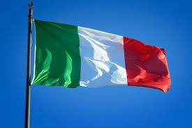
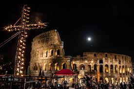

Celebração da Páscoa na Itália
Na Itália, a Páscoa é profundamente religiosa, com procissões elaboradas durante a Semana Santa, como a Procissão dos Penitentes em Roma, onde fiéis marcham em silêncio carregando cruzes e estátuas sagradas.
A culinária desempenha um papel importante, com pratos tradicionais como a "Colomba Pasquale", um bolo em forma de pomba, e ovos decorados. Famílias se reúnem para refeições especiais, e em algumas regiões, há fogos de artifício e desfiles.
Embora o aspecto espiritual seja central, especialmente na comunidade católica, a Páscoa italiana também inclui elementos folclóricos, como a "Puppetata", uma tradição siciliana de teatro de marionetes. É um tempo de reflexão, renovação e celebração familiar.

